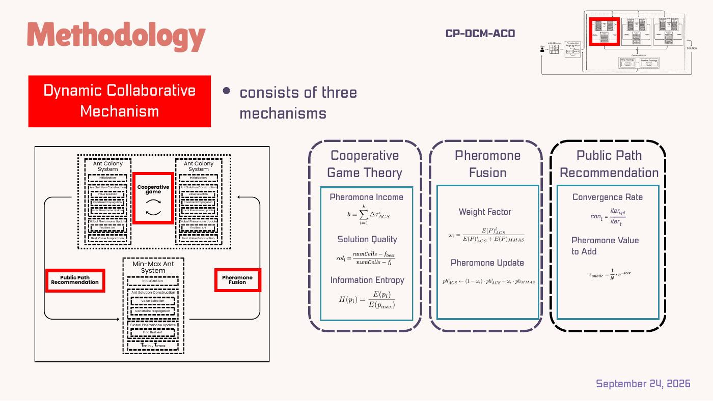
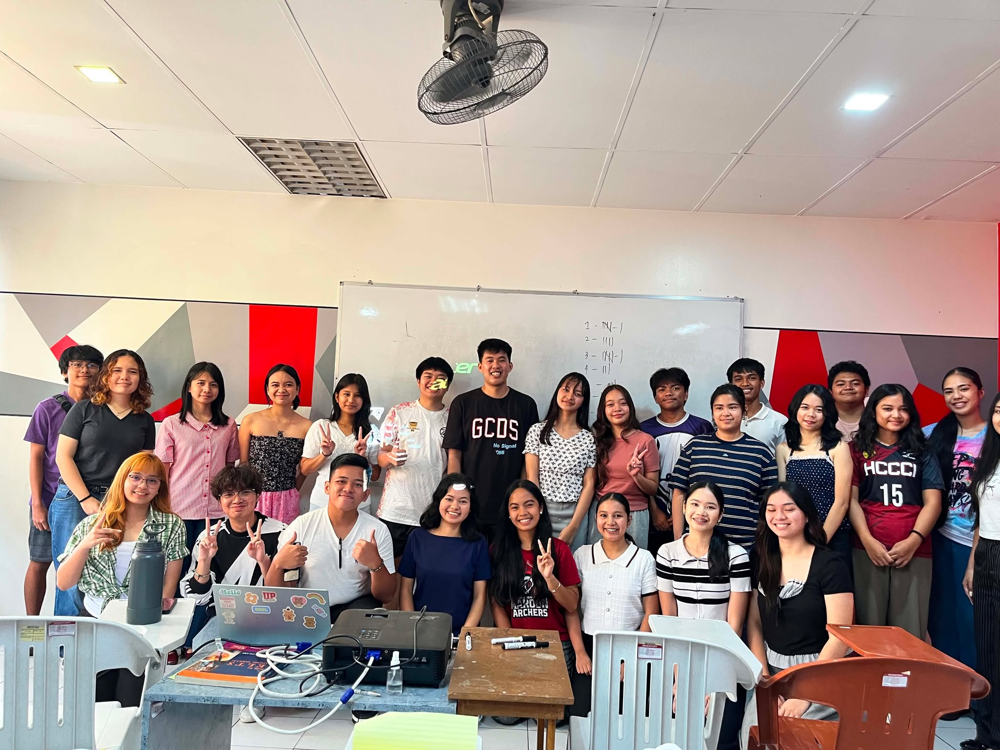

The presentation reports testing across 9×9, 16×16 and 25×25 Sudoku instances and examines thread scaling, success rate and solution time.

Systems & Algorithm Design
Constraint propagation, ant colony systems, Min-Max ant systems, pheromone fusion, public path recommendation and cooperative mechanisms form the research workflow.
PYJAVAC++JS
Programming & Systems
Programming experience across Python, Java, C++, web fundamentals and API-oriented workflows.
AI Automation
Exploring practical automation using APIs, LLMs, n8n and CRM workflows.
INPUT → AI → ACTION
02
BRAINBOX · EDUCATION
Teaching, reviewing, making things click.
Academic tutoring and review work backed by employment records, recognition and classroom photographs.

Academic Tutor
Mathematics and Programming support focused on turning difficult concepts into understandable steps.